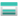
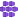
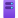

External SAN Array
Fibre Channel / iSCSI Shared Volumes
Select any interactive scenario from Scenarios in the top-right header, or click any component in the diagram.

Cloud-AKS-Prod

Keep apps, VMs, and sensitive data inside your own datacenter, factory, hospital, or retail store.
Use the exact same Azure Portal and tools to manage local servers—even surviving 30-day internet outages.
Need zero internet? Bring the Azure Control Plane down onto 3 dedicated local management servers.
Choose an interactive Azure Local architecture or failure simulation to run live on stage
The brain that manages your servers and VMs.